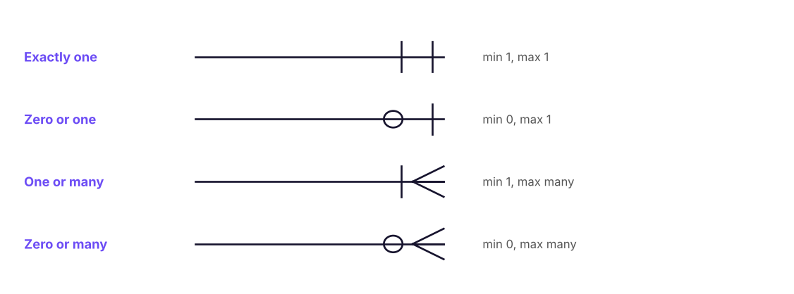
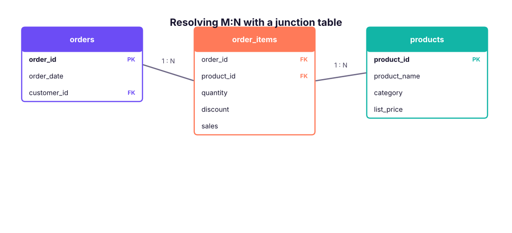
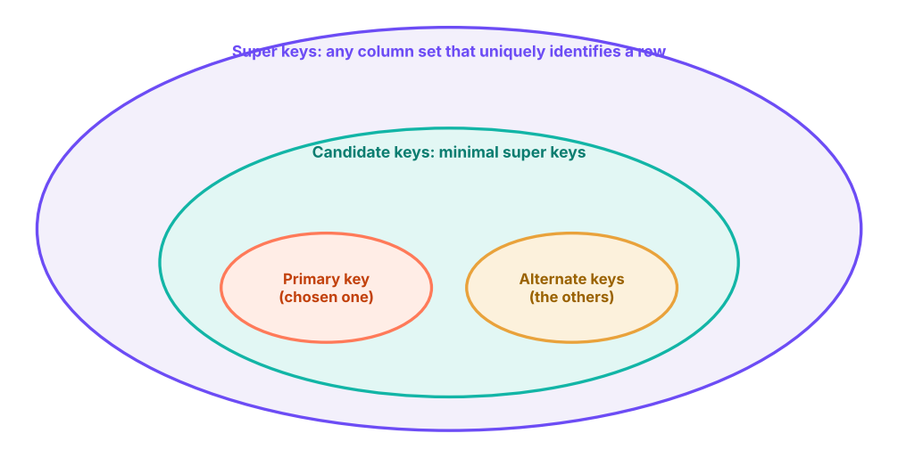
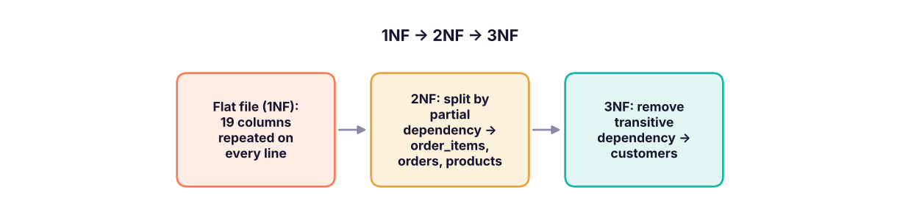

Design databases the way professionals do. Draw ER diagrams, read crow's-foot notation, model one-to-one, one-to-many and many-to-many relationships, master every type of key (super, candidate, primary, alternate, composite, foreign, surrogate) and normalise tables to 3NF.
A database that is designed badly is slow, wastes space and, worst of all, lets data contradict itself. Imagine the customer's city stored in every order row: if the customer moves, you must update thousands of rows, and missing one creates two different "truths". Good design stores each fact once and connects tables with keys.
Entity–Relationship (ER) diagrams
An ER diagram is a picture of the data model before any table is created.
DefinitionBuilding blocks
Entity: a real-world thing you store data about: Customer, Order, Product, Employee. Becomes a table.
Attribute: a property of an entity: name, city, price. Becomes a column.
Relationship: how entities are associated: a Customer places Orders. Implemented with foreign keys.
Cardinality: how many of one entity relate to another: one-to-one, one-to-many, many-to-many.
Participation (optionality): whether the relationship is mandatory (every order must have a customer) or optional (a customer may have zero orders).
Crow's-foot notation
The most common notation in industry draws symbols at the ends of each relationship line:

Crow's-foot symbols. Read each end as "minimum … maximum".
Reading example: Customer ||——o< Order means "each order belongs to exactly one customer; each customer places zero or many orders".
Types of relationships
One-to-one (1:1)
Each row in A matches at most one row in B. Example: Employee ↔ Employee_Bank_Details. Often used to split sensitive or rarely used columns into a separate, more protected table. Implemented with a foreign key that is also unique (often the same as the primary key).
One-to-many (1:N) — the most common
One row in A matches many rows in B; each B row matches one A row. Examples: Customer → Orders, Department → Employees, Category → Products. The foreign key goes on the "many" side (orders.customer_id).
Many-to-many (M:N)
Many rows in A match many in B: Students ↔ Courses, Orders ↔ Products, Actors ↔ Movies. Relational tables cannot store this directly, so we add a junction (bridge, associative) table that holds a pair of foreign keys, turning one M:N into two 1:N relationships.

An order contains many products and a product appears in many orders. The junction table order_items resolves the many-to-many relationship and stores facts about each pair (quantity, discount).
Relationship
Example
Where the foreign key goes
1 : 1
Employee – Passport
Either side, marked UNIQUE
1 : N
Department – Employees
On the N side (employees.dept_id)
M : N
Students – Courses
In a junction table enrolments(student_id, course_id)
Self (recursive)
Employee – Manager
In the same table: employees.manager_id → employees.emp_id
Let's check the real cardinalities in our retail data with SQL. How many orders does each customer have, and how many items does each order have?
SQL
SELECTMIN(n_orders) AS min_orders_per_customer,
MAX(n_orders) AS max_orders_per_customer,
ROUND(AVG(n_orders * 1.0), 2) AS avg_orders_per_customer
FROM (SELECT customer_id, COUNT(*) AS n_orders FROM orders GROUPBY customer_id) AS t;
Result
min_orders_per_customer
max_orders_per_customer
avg_orders_per_customer
1
10
4.08
1 rows × 3 columns
SQL
SELECT items_in_order, COUNT(*) AS number_of_orders
FROM (SELECT order_id, COUNT(*) AS items_in_order FROM order_items GROUPBY order_id) AS t
GROUPBY items_in_order
ORDERBY items_in_order;
Result
items_in_order
number_of_orders
1
1394
2
920
3
455
4
431
4 rows × 2 columns
So Customer → Orders is 1:N, and Order → Order items is 1:N (1 to 4 items per order here).
Keys
Keys are columns (or sets of columns) with special meaning. They are among the most frequently asked interview topics.

How the main key types relate: every candidate key is a minimal super key; one candidate is chosen as the primary key and the rest become alternate keys.
Example table employees(emp_id, email, pan_number, name, dept_id, phone), where emp_id, email and pan_number are each unique:
Key type
Definition
Example
Super key
Any set of columns that uniquely identifies a row (may include extra columns)
{emp_id}, {emp_id, name}, {email, dept_id}
Candidate key
A minimal super key: remove any column and it stops being unique
{emp_id}, {email}, {pan_number}
Primary key (PK)
The candidate key chosen to identify rows. Unique, not NULL, one per table
emp_id
Alternate key
Candidate keys not chosen as primary; enforce them with UNIQUE
email, pan_number
Composite key
A key made of two or more columns
(order_id, product_id) in order_items; (student_id, course_id) in enrolments
Foreign key (FK)
A column that refers to a PK (or unique key) in another table
employees.dept_id → departments.dept_id
Unique key
A UNIQUE constraint: no duplicates, but (in SQL Server) one NULL is allowed
phone
Surrogate key
An artificial key with no business meaning, often an auto-number
customer_key INT IDENTITY(1,1)
Natural key
A key with business meaning
PAN number, GSTIN, ISBN, email
TipSurrogate or natural?
Natural keys can change (people change email, products get recoded) and can be long. Most warehouses and Power BI models use surrogate integer keys for joins, and keep natural keys as alternate (unique) keys.
Primary key vs unique key
Primary key
Unique key
Duplicates allowed
No
No
NULL allowed
No
Yes (SQL Server allows one NULL; PostgreSQL allows many)
Per table
Exactly one
Many
Default index (SQL Server)
Clustered
Non-clustered
Referential integrity
A foreign key guarantees that every child row points to a parent that exists: you cannot insert an order for customer C9999 if that customer does not exist. What happens when a parent row is deleted or its key is updated is controlled by the FK's actions:
Normalisation organises columns and tables to reduce redundancy and avoid anomalies:
Update anomaly: the same fact stored in many rows gets changed in some but not others.
Insert anomaly: you cannot add a fact without another fact (cannot add a new product until someone orders it).
Delete anomaly: deleting one fact removes another (deleting the only order of a product deletes the product's information).
Start with the flat Superstore file, which repeats customer and product details on every order line:
SQL
SELECTTOP5 order_id, order_date, customer_id, customer_name, city, product_id, product_name, category, quantity, sales
FROM superstore;
Result
order_id
order_date
customer_id
customer_name
city
product_id
product_name
category
quantity
sales
IN-2023-00001
2023-01-01
C0765
Ishaan Gupta
Bengaluru
P0059
Nova Phone 223
Technology
2
36,000
IN-2023-00001
2023-01-01
C0765
Ishaan Gupta
Bengaluru
P0050
Orbit Appliance 798
Office Supplies
1
3,850
IN-2023-00001
2023-01-01
C0765
Ishaan Gupta
Bengaluru
P0011
Orbit Table 248
Furniture
4
62,080
IN-2023-00002
2023-01-03
C0791
Kabir Singh
Ahmedabad
P0037
Crest Storage 946
Office Supplies
2
5,216
IN-2023-00003
2023-01-03
C0049
Sneha Khan
Ahmedabad
P0018
Crest Bookcase 170
Furniture
3
24,591
5 rows × 10 columns
First normal form (1NF)
Each cell holds one atomic value (no lists like "Chair, Table").
No repeating groups of columns (product1, product2, product3).
Each row is unique (a key exists).
The flat file is already in 1NF: one product per row, and every row has a unique row_id. The natural key would be (order_id, product_id), but 70 lines repeat the same product within the same order, which is exactly why real systems add a surrogate key such as row_id or item_id.
Second normal form (2NF)
1NF and every non-key column depends on the whole key, not part of it (this matters only with composite keys). With key (order_id, product_id):
quantity, discount, sales depend on both: they stay.
order_date, customer_id, ship_mode depend only on order_id → move to an orders table.
product_name, category depend only on product_id → move to a products table.
Third normal form (3NF)
2NF and no transitive dependency: non-key columns must depend only on the key, not on other non-key columns. In orders, customer_name, city and region depend on customer_id, not on order_id → move them to a customers table.
"Every non-key attribute must provide a fact about the key, the whole key, and nothing but the key." (Bill Kent)

Normalising the flat Superstore file to 3NF gives the four-table RetailDB design.
How much repetition did normalisation remove? Count the distinct customers and products versus rows:
SQL
SELECTCOUNT(*) AS order_lines,
COUNT(DISTINCT order_id) AS orders,
COUNT(DISTINCT customer_id) AS customers,
COUNT(DISTINCT product_id) AS products
FROM superstore;
Result
order_lines
orders
customers
products
6323
3200
785
78
1 rows × 4 columns
The flat file stores customer details 6,323 times; the normalised design stores them once per customer (fewer than 800 rows).
Normal form
Rule in plain words
1NF
One value per cell; no repeating columns; a key exists
2NF
No column depends on only part of a composite key
3NF
No column depends on another non-key column
BCNF
Every determinant is a candidate key (stricter 3NF)
4NF / 5NF
Remove multi-valued and join dependencies (rare in practice)
Denormalisation and the star schema
Transactional systems (OLTP) are normalised for safe, fast writes. Analytical systems (OLAP, data warehouses, Power BI) are often denormalised into a star schema: one central fact table (sales events with numbers) surrounded by dimension tables (customer, product, date, region) to make reading and aggregating fast and simple. You will build one in the Power BI track (Lesson 3).
OLTP (normalised)
OLAP / warehouse (star schema)
Purpose
Run the business: place orders, update stock
Analyse the business
Operations
Many small inserts and updates
Large reads and aggregations
Design
3NF, many tables
Fact + dimension tables
Examples
App database in SQL Server/PostgreSQL
Snowflake, BigQuery, Fabric, Power BI model
Summary
Key takeaways
ER diagrams show entities (tables), attributes (columns) and relationships with cardinality (1:1, 1:N, M:N).
The foreign key sits on the many side; M:N needs a junction table with a composite key.
Super key ⊇ candidate keys (minimal); one candidate becomes the primary key (unique, not NULL), the others are alternate keys (UNIQUE).
Composite keys combine columns; surrogate keys are artificial integers; natural keys carry business meaning.
Foreign keys enforce referential integrity; ON DELETE CASCADE / SET NULL / NO ACTION decide what happens to children.
Normalise to 3NF to remove redundancy and anomalies; denormalise into a star schema for analytics.
Quick quiz6 questions · tap an answer to check it
1. Students can enrol in many courses and courses have many students. How do you model this?
Answer: C. A junction table resolves M:N into two 1:N relationships.
2. In a 1:N relationship between departments and employees, where does the foreign key go?
Answer: B. The FK goes on the "many" side: employees.dept_id.
3. Which statement about a primary key is FALSE?
Answer: C. A table has one primary key, which may be composite.
4.email is unique in the employees table but emp_id was chosen as the primary key. What is email?
Answer: B. Unchosen candidate keys are alternate keys, enforced with UNIQUE.
5. In orders(order_id, customer_id, customer_city), customer_city depends on customer_id. Which normal form is violated?
Answer: C. A non-key column depending on another non-key column is a transitive dependency, violating 3NF.
6. What does ON DELETE CASCADE on order_items.order_id do?
Answer: A. CASCADE propagates the delete to child rows.
ExerciseDesign a library database
A library has members, books and loans. A member can borrow many books over time; a book (copy) can be borrowed many times; each loan has a borrow date, due date and return date. Books have an ISBN, title and author; authors can write many books and a book can have several authors. Draw the entities, keys and relationships.
Show solution
members(member_id PK, name, email UNIQUE, phone)
books(book_id PK, isbn UNIQUE, title, publisher, year)
copies(copy_id PK, book_id FK, shelf): one book has many physical copies.
loans(loan_id PK, copy_id FK, member_id FK, borrow_date, due_date, return_date NULL).
Relationships: members 1:N loans; copies 1:N loans; books 1:N copies; books M:N authors (via book_authors).
Interview cornerQuestions you may be asked
Q: Difference between primary key, unique key and foreign key?
PK uniquely identifies rows, no NULLs, one per table. A unique key also prevents duplicates but allows a NULL (one in SQL Server) and a table can have many. A foreign key references a PK/unique key in another table to enforce relationships.
Q: What is a candidate key? A composite key?
A candidate key is a minimal set of columns that uniquely identifies rows; one is chosen as the PK. A composite key uses two or more columns together, such as (order_id, product_id).
Q: What is normalisation and why denormalise?
Normalisation removes redundancy and anomalies (1NF–3NF). Data warehouses denormalise into star schemas to make analytical queries simpler and faster.
Practise more online
Free, trusted places to test yourself on this topic. Links open the original site in a new tab.